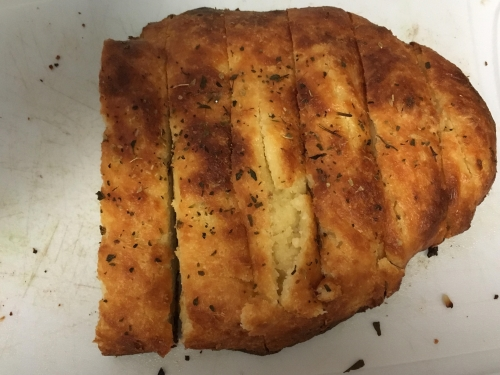

Cheesy Garlic Bread Recipe

A tasty italian appetizer.
Ingredients
- 250g Mozarella grated
- 85g Almond flour
- 2tbsp Cream cheese full fat
- 1tbsp Garlic crushed
- 1tsp Baking powder
- Salt to taste
- 1 Egg medium
Steps
- In a microwaveable bowl, combine all ingredients except the egg, mix well.
- Microwave for 1 minute on high
- Stir well & microwave on high for another 30 seconds.
- Add the egg, mix gently to make a cheesy dough.
- Place onto a baking tray, form into a loaf shape.
- Cut slices into the dough.
- Bake at 220C for 15 mins.